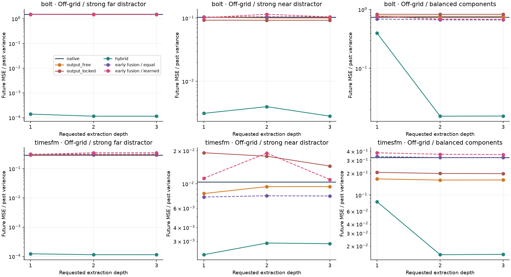
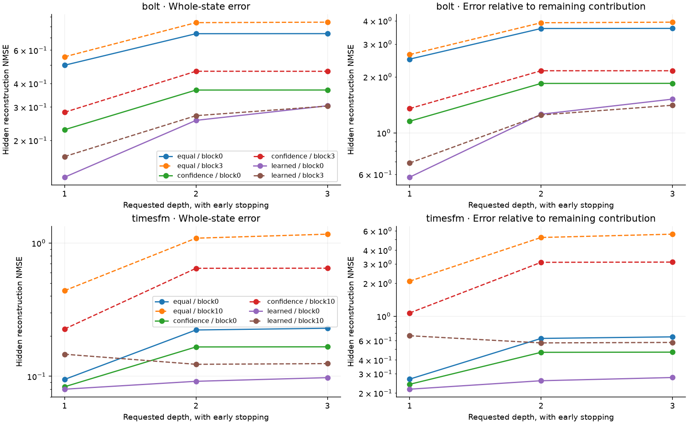
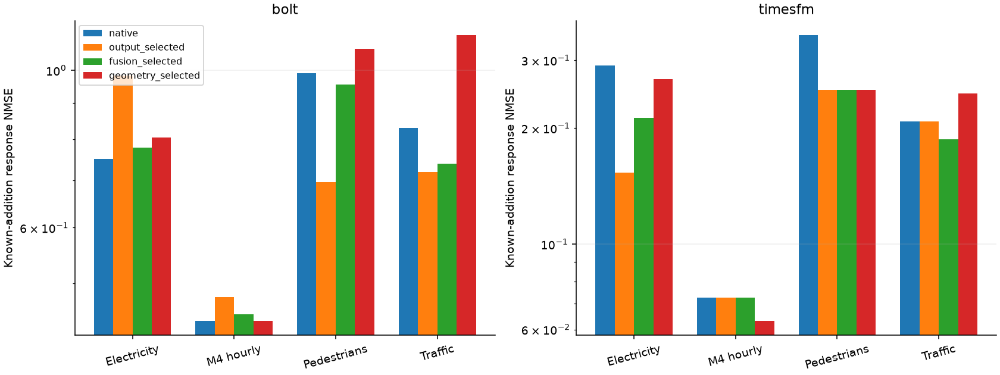
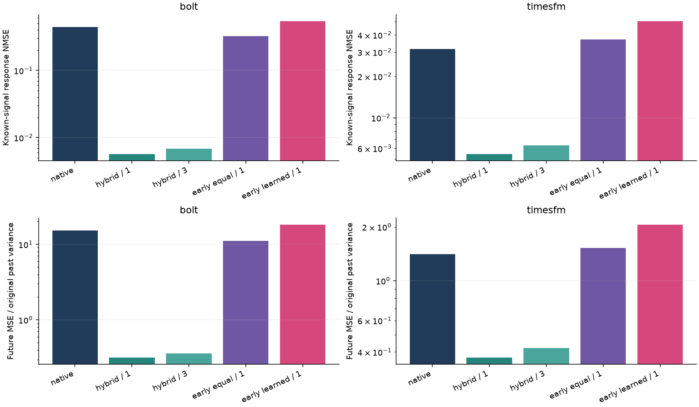
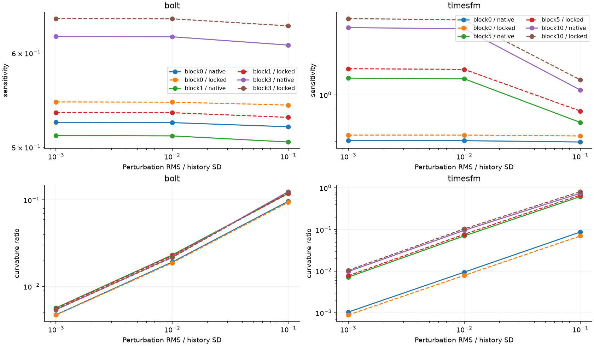
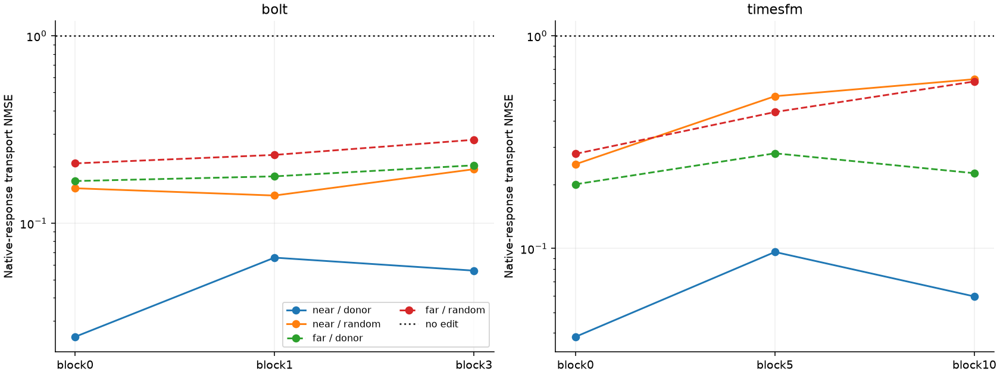
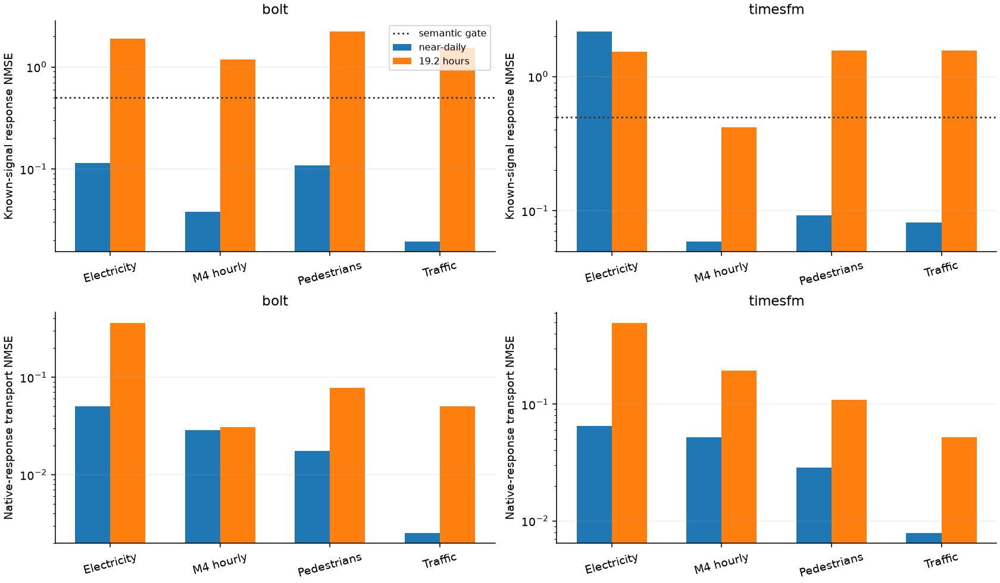

Selective internal composition · Section49SECTION 49 · INTERNAL DECOMPOSABILITY
Selective patterns, intact residuals, and hidden-state composition
32 fresh synthetic seeds · 32 fresh real sources · two frozen TSFMs · no neural training
224 contexts include repeated conditions within sources. Effective source count is 64, not 224.
Findings and limits
The selective adapter works as a bounded proof of concept: extract only stable fitted tones, keep the residual intact, and let the model forecast that residual. FIT-selected hybrid depths reduce mean held-out synthetic normalized loss to 0.006031990799018737 for Bolt and 0.004931439430488167 for TimesFM. This positive result includes off-grid mixtures; it does not rely on knowing the generating decomposition. It does not establish that arbitrary real series have separable stationary tones.
Internal fusion gives a narrower result. Bolt’s FIT-selected pure first-block composition (requested depth 2, frozen pilot geometry weights) improves held-out synthetic loss by 0.04554777148291069, with conditional source-bootstrap interval [0.03945377595869312, 0.05159511970435278]. Its advantage over matched random edits is 0.014407703650315172. TimesFM’s selected intervention retains half the natural state and has gain 0.0027575090146978944, interval [-0.009879762380357215, 0.013874104216795776]. Thus the tested recipe supports a modest Bolt effect, not a general activation-composition solution.
Reconstruction and prediction are different objectives. Selecting pure fusion by hidden reconstruction alone does not reliably improve forecasting: Bolt’s gain interval crosses zero, and TimesFM’s gain is -0.007938986098528698 with interval [-0.014037585629773879, -0.0017337445038410355]. Balanced and dominant-only controls also test whether a good whole-state score merely follows a large component. The remaining-contribution denominator is full state minus dominant-branch state; it is not an oracle representation of the true weak component.
The balanced-mixture control reverses the apparent reconstruction advantage without producing a matching forecasting advantage. At the first block and depth 1, equal-weight TimesFM composition has mean error 0.26719512599310846 relative to the remaining hidden contribution, versus 2.4911155737257302 for Bolt. Yet TimesFM’s future loss changes from 0.327477538734416 to 0.33736003512872703, while Bolt’s changes from 0.7459936128206015 to 0.6915583213036312. These are descriptive paired means over 16 TEST seeds, not a cross-model coordinate alignment.
The adaptive tree abstains on 13 of 16 moderate-injection real TEST contexts. The fixed stronger injection makes all 16 split without relaxing thresholds. At amplitude 8, depth-1 hybrid future loss in original-history units is 0.3186258362659885 versus native 15.135874660784449 for Bolt, and 0.37227180446010033 versus 1.4132528995863665 for TimesFM. Pure equal-weight first-block fusion yields 11.059142326415767 and 1.5258219698428577 respectively. Strong synthetic additions establish feasibility on uncertain real residuals; they are not a natural-data accuracy benchmark.
The small-radius perturbation averages favor local smoothness in the tested directions: first-block sensitivity stays almost constant as radius shrinks, and curvature decreases. This can coexist with context-dependent component effects. A smooth mapping need not be additive, and neither smoothness nor accurate whole-state reconstruction guarantees correct extrapolation. Individual tails and the tree’s own threshold changes are reported separately.
The donor-transfer controls distinguish matching the model from matching the signal. Near-daily Bolt effects transfer well between similar real backgrounds. At the fixed 19.2-hour frequency, all 96 Bolt oracle patches pass, yet none of the 96 repeated transfer rows passes the native-signal accuracy gate. A transferable wrong response is evidence about reproducible model behavior, not reliable component semantics. These tests are within-model; they do not establish cross-model representational agreement or disagreement.
Signal strength also changes native behavior. On the same real sources with period 19.2 and phase 0.6, increasing the known addition from amplitude 2 to 8 reduces native response NMSE from 0.7533850061551081 to 0.44304970846656244 for Bolt and from 0.22965478913847118 to 0.03153184616947545 for TimesFM. This argues against a categorical inability to handle that frequency. Amplitude changes the mixture and its native normalization together, so the test does not isolate a single internal cause. TimesFM’s random-transfer controls also fail their geometry gate in 103 of 192 near-daily rows and 27 of 96 second-frequency rows; those cases cannot support directional specificity.
The expansion uses 32 fresh synthetic seeds and 32 fresh real source series, split equally for fitting and evaluation. Repeated conditions and interventions do not increase the independent sample count. Four TEST sources per real dataset, unknown pretraining overlap, two model checkpoints and a short context/horizon limit generalization. All intervals are exploratory and conditional; the follow-up controls are hypothesis-driven extensions, not sealed independent confirmations.
Earlier fixed-band study motivated the off-grid controls; its failure did not test this selective residual tree.
How earlier results shaped these tests
PM-28's fixed-band failures motivated continuous-frequency extraction. PM-23 and earlier restoration audits motivated shared normalization, affine-baseline correction and oracle closure. SH-25 already showed retained spectral information despite poor native forecasting in another frequency regime, so a poor forecast here is not treated as proof of missing information. Earlier concept-sharing tests also had sensitivity limits and many undecided outcomes; these within-model interventions do not assume that low cross-model transfer proves different semantics.
The new tests therefore separate hidden reconstruction, the remaining small contribution, suffix behavior, prediction correctness and local stability. No single score establishes general reducibility.
What was actually decomposed?
Estimate a dominant frequency continuously between FFT bins. Split only if its past-half amplitude/phase stability, spectral prominence and explained variance pass fixed gates. Keep that tone; recurse on the remaining series, at most three times. The residual always remains intact and is always included. No generating components or future labels enter this procedure.
Accepted TEST depths. A zero is a deliberate abstention, not an unsuccessful forecast. Requested depth curves respect this same stopping rule and keep source membership fixed.
Does selective extraction improve forecasting?

TEST synthetic cases; lower is better, logarithmic axes. Output_free sums independently normalized component forecasts. Output_locked uses the original full-context normalizer. Hybrid extrapolates fitted tones classically and asks the model to forecast only the residual. Early fusion replaces the first block's state with a pure composed state. A hybrid gain alone is not evidence that internal representations compose.
FIT-only chosen policies, evaluated on held-out sources. Positive gain means lower future loss than native. Conditional 95% source-bootstrap intervals are exploratory, not multiplicity-corrected confirmation. Synthetic conditions average within seed. Real policy scores average original and injected contexts within source. Exact ties prefer native. Invalid random controls cannot establish directional specificity.
Do the hidden representations compose?

Balanced off-grid mixtures prevent a large component from making reconstruction look trivially good. Left: composition error relative to the full signal-dependent state. Right: the same error relative to the full state minus the dominant branch state. All curves use pure composition, with no retained native-state blend. They still share the full context’s normalization statistics; this is conditional composition, not wholly independent encoding. Actual early stops are respected. Different layers and models have different coordinate systems; these are within-model reconstruction tests.
States use the full context's native normalizer and all native token positions. Composition subtracts duplicated zero-context state. The remaining network is the actual native suffix. Native-state blends of 0.5 and 1 were also tested, but retaining half the original state is not itself evidence of decomposability.
Weights fitted using pilot hidden states only
Two bounded weights, shared across sources at each depth/cut: extracted-tone sum and residual. Fit only on pilot FIT hidden states, with no future labels. These weights were frozen before replication inference. A zero residual weight is reported, not interpreted automatically as “the model ignores noise.”
Clear injected pattern, uncertain real residual

Four TEST sources per dataset, each paired with a known amplitude 2, period 19.2 oscillation. The model still has to handle the observed real residual. These are dependent counterfactual contexts, not new independent series. Smaller response error need not imply a better forecast of the original series.
When the injected pattern is clearly separable

The fixed amplitude 8 control triggers extraction on all 16 TEST real sources, compared with only 3 of 16 at amplitude 2. Gates and weights are unchanged. The model predicts the uncertain residual in the hybrid; pure early fusion instead asks the native suffix to use recombined states. Each response compares a method with its own original-context counterpart.
Exploratory follow-up on the same sources, not an independent confirmation. Figure averages all 16 sources; table keeps the four-source datasets separate. Future loss uses original-history variance to keep amplitude changes from hiding errors. No best TEST depth was selected. All tested methods, layers, depths, and valid/invalid random-control pairs remain in strong_signal_scores.json.
Locally jagged, or smoothly context-dependent?

Same fixed sinusoidal direction at three relative radii, averaged within each seed. Solid: native normalization. Dashed: normalization held to the original context. Sensitivity is the centered secant magnitude divided by input radius; curvature is the symmetric second difference divided by first-response magnitude. Stable sensitivity and shrinking curvature are evidence of local smoothness in these directions, not a theorem of global smoothness. A separate seeded noise direction is retained in the data. Model magnitudes are not directly comparable coordinate-wise.
Small-radius first-block tails, including noise directions
These are tails over observed contexts, not additional independent samples. Full layer/radius/normalizer summaries are in local_tail_summary.json.
The adaptive decomposition is checked separately. Hard split thresholds can change tree structure even when the native network is smooth. Tone branches are matched before comparison so reordered peaks do not create a false instability.
Does the same component effect transfer between backgrounds?

Radius 0.1, TEST real receivers and nearest/farthest FIT donors within each dataset. Plot is descriptive over oracle-valid, random-valid cases; no-edit native-response error is 1. The oracle injects the receiver's actual perturbed state under its own locked normalizer. Passing that gate is required before interpreting donor transfer. Matching the native response is distinct from correctly forecasting the injected sinusoid.
Rows repeat receivers across radii, layers and donor choices. They are not independent samples. Semantic eligibility additionally requires an accurate native known-sinusoid response. Failed eligibility stays visible; results outside that subset describe behavioral transport, not stable concept semantics. There is no cross-model activation-alignment claim.
Transfer can preserve an incorrect component response

A fixed frequency-specificity control motivated by Bolt's near-daily transfer result. Same16 real TEST receivers, same nearest FIT donors, radius0.1 and first-block cut. Top: does the native forecast change match the actual injected oscillation? Bottom: does the transferred edit reproduce that native change? Good behavioral transport can coexist with an incorrect native response. The 19.2-hour control was declared before its execution; it is exploratory, not a frequency sweep.
Paired near/far contrasts on the same valid receivers
First block, radius 0.1; both donor controls must be oracle-valid and random-valid. Positive differences favor the near donor. Conditional source-bootstrap intervals are exploratory; each dataset has at most four receivers. These behavior-only contrasts do not require accurate native signal extrapolation.
Validity, provenance and reproducibility
Native repeat, self-replacement, anchored-normalizer identity and input reconstruction are checked. Random edits preserve receiver/edit geometry and are flagged when degenerate. Independent replay checks saved hidden geometry, local hidden sensitivity and forecast losses. Raw plus/minus forecast arrays were not retained for the initial local-sensitivity screen; those forecast-only rows are instrumented diagnostics rather than independently replayed evidence.
Real replication source IDs are fresh relative to earlier studies; pretraining overlap remains unknown. Only four TEST sources per real dataset limits generalization. FIT selection and held-out evaluation remain separate. Full curves, nulls and individual measurements are retained; no best TEST depth is presented as a deployable selection rule.
Complete analysis · Hidden geometry · Real response pairs · Frozen protocol · Audit · Reproduce